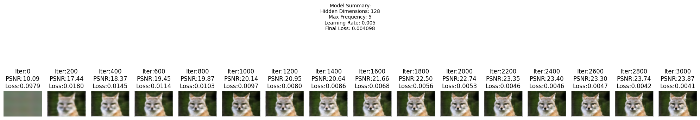

The code to run this is in `./code/code002.ipynb` the notebook has instructions if you follow you should be able to run assuming you have a GPU.
`[Deliverables]` As a reference, the above images show the process of optimizing the network to fit on this image.
`(1.1)` Report the detailed architecture of your model. Include information on hyperparameters chosen for training and a plot showing the training PSNR across iterations.
`(1.2)` Visualize the training process by plotting the predicted images across iterations, similar to the above reference.
`(1.3)` Try running this optimization on at least another image from your collection. Choose one set of hyperparameter for this image and show the PNSR curve, as well as the visualization of the training process.
`(1.4)` Run the aforementioned hyperparameter tuning.
Like mentioned in the requirements I ran this on two different images, look below for more detail.
Detailed Architecture of the Model
The model architecture consists of a Neural Field, combining Positional Encoding and a Multilayer Perceptron (MLP). The input to the model is 2D pixel coordinates \((u, v)\), which are transformed into a higher-dimensional representation using Positional Encoding. This encoding maps the coordinates into a \(2 + 2L\)-dimensional vector, where \(L\) is the number of frequency levels. The encoded input is then passed through an MLP with three fully connected layers, each using ReLU activation for hidden layers and a Sigmoid activation at the output layer to constrain the RGB values to the range \([0, 1]\). The network structure allows it to learn fine-grained details of the image while maintaining smooth color transitions. Hyperparameters such as hidden dimensions, positional encoding frequencies, and learning rates were varied to evaluate their impact on model performance.
both images following this model whilst varying the hyperparamters
The model used is a Neural Field consisting of:
1. Positional Encoding:
- Encodes 2D input coordinates into a higher-dimensional space for the network to capture fine-grained details.
- Number of frequencies ( $L$ ): varies between experiments (e.g., $L=5,10,50$ ).
- Output Layer: RGB values $([r, g, b])$ constrained to $[0,1]$ using Sigmoid.
- Activation Function: ReLU in hidden layers.
Example Model Details
- Hidden Dimensions: 128
- Max Frequency $(L): 10$
- Learning Rate: $\mathbf{0 . 0 1}$
For both images the following hyperparameters were varied to assess their impact:
1. Hidden Dimensions:
- Values tested: $64,128$.
- Larger dimensions provide more capacity for learning but increase computational costs.
2. Max Frequency $(L)$ :
- Values tested: $5,10,50$.
- Higher frequencies allow the network to learn finer details.
3. Learning Rate:
- Values tested: $0.01,0.005$.
- Larger learning rates speed up convergence but may cause instability.
Image 1
here is the starting image added below
the PSNR and LOSS curves for each of the Hyperparameter Tuning tests are added below
now for each of the 12 variations, I added the visual of the training process by plotting the predicted images across iterations, similar to the above reference

and the best one was from the following model
Image 2
here is the starting image added below
the PSNR and LOSS curves for each of the Hyperparameter Tuning tests are added below
now for each of the 12 variations, I added the visual of the training process by plotting the predicted images across iterations, similar to the above reference
and the best one was from the following model
for `PART 2` ...
The code to run this is in `./code/code005.ipynb` the notebook has instructions if you follow you should be able to run assuming you have a GPU.
Fit a Neural Radiance Field from Multi-view Images
In this section the requirements are as follows ...
`[Deliverables]` As a reference, the images below show the process of optimizing the network to fit on our lego multi-view images from a novel view. The staff solution reaches above 23 PSNR with 1000 gradient steps and a batchsize of 10K rays per gradent step. The staff solution uses an Adam optimizer with a learning rate of 5e-4. For guaranteed full credit, achieve 23 PSNR for any number of iterations.
`(2.1)` Include a brief description of how you implement each part.
`(2.2)` Report the visualization of the rays and samples you draw at a single training step (along with the cameras), similar to the plot we show above. Plot up to 100 rays to make it less crowded.
`(2.3)` Visualize the training process by plotting the predicted images across iterations, similar to the above reference, as well as the PSNR curve on the validation set (6 images).
`(2.4)` After you train the network, you can use it to render a novel view image of the lego from arbitrary camera extrinsic. Show a spherical rendering of the lego video using the provided cameras extrinsics (c2ws_test in the npz file). You should be get a video like this (left is 10 after minutes training, right is 2.5 hrs training):
...
First off like the staff solution I was also able to reach above 23 PSNR with 1000 gradient steps and a batchsize of 10K rays per gradent step and also used an Adam optimizer with a learning rate of 5e-4. The data for this will be included below.
...
I will start by providing an `overview` (i.e. `deliverable 2.1`) of each part then all of the supporting images, videos and other deliverables.
please follow notebook for specific code with regard to each of the `[Impl]` parts
Part 2.1: Create Rays from Cameras
`transform(c2w, x_c)`
following example from $\rightarrow \left[\begin{array}{c}x_c \\ y_c \\ z_c \\ 1\end{array}\right]=\left[\begin{array}{cc}\mathbf{R}_{3 \times 3} & \mathbf{t} \\ \mathbf{0}_{1 \times 3} & 1\end{array}\right]\left[\begin{array}{c}x_w \\ y_w \\ z_w \\ 1\end{array}\right]$
This function transforms points `x_c` from camera coordinates to world coordinates using `c2w.`
`[Impl]` In this session you would need to implement a function `x_w = transform(c2w, x_c)` that transform a point from camera to the world space. You can verify your implementation by checking if the follow statement is always true: `x == transform(c2w.inv(), transform(c2w, x))`. Note you might want your implementation to support batched coordinates for later use. You can implement it with either numpy or torch.
I implemented this and got it to pass, results below.
Converts pixel coordinates uv to camera coordinates given K and depth s.
this is for the following implementation requirement ...
`[Impl]` In this session you would need to implement a function that invert the aforementioned process, which transform a point from the pixel coordinate system back to the camera coordinate system: x_c = pixel_to_camera(K, uv, s). Similar to the previous session, you might also want your implementation here to support batched coordinates for later use. You can implement it with either numpy or torch.
I passed the example test case as well given below ...
`Testing pixel_to_camera...`
`Pixel at principal point should map to x_c=0,y_c=0,z_c=1`
`Calculated: [0. 0. 1.]`
`pixel_to_camera test passed!`
`pixel_to_ray(K, c2w, uv)`
Given a pixel uv, intrinsics K, and camera-to-world matrix c2w, returns the ray origin and direction in world coordinates.
this is for the following implementation requirement ...
`[Impl]` In this session you would need to implement this function that convert a pixel coordinate to a ray with origin and noramlized direction: ray_o, ray_d = pixel_to_ray(K, c2w, uv). You might find your previously implemented functions useful here. Similarly you might also want your implementation here to support batched coordinates.
I passed the example test case as well given below ...
`Testing pixel_to_ray...`
`Ray origin (should be camera position): [-0.05379832 3.84547043 1.20808232]`
`Ray direction (should be unit vector): [ 0.01334572 -0.95394381 -0.29968835]`
`pixel_to_ray test passed!`
Part 2.2: Sampling
The implementation requirement for this part is ...
`[Impl: Sampling Rays from Images]` In Part 1, we have done random sampling on a single image to get the pixel color and pixel coordinates. Here we can build on top of that, and with the camera intrinsics & extrinsics, we would be able to convert the pixel coordinates into ray origins and directions. Make sure to account for the offset from image coordinate to pixel center (this can be done simply by adding .5 to your UV pixel coordinate grid)! Since we have multiple images now, we have two options of sampling rays. Say we want to sample N rays at every training iteration, option 1 is to first sample M images, and then sample N // M rays from every image. The other option is to flatten all pixels from all images and do a global sampling once to get N rays from all images. You can choose which ever way do ray sampling.
Here I did option 2 and made `sample_rays_global(images_train, c2ws_train, K, N)` which is to sample N rays globally from all training images.
It returns rays_o: (N,3), rays_d: (N,3) and pixels: (N,3) ground-truth RGB.
For this function all the tests passed, `sample_rays_global test passed!`
The implementation requirement for this part is ...
`[Impl: Sampling Points along Rays.]` After having rays, we also need to discritize each ray into samples that live in the 3D space. The simplist way is to uniformly create some samples along the ray ( $t=n p$. linspace(near, far, $n_{-}$samples)). For the lego scene that we have, we can set near=2.0 and far=6.0. The actually 3D corrdinates can be accquired by $\mathbf{x}=\mathbf{R}_o+\mathbf{R}_d * t$. However this would lead to a fixed set of 3D points, which could potentially lead to overfitting when we train the NeRF later on. On top of this, we want to introduce some small perturbation to the points only during training, so that every location along the ray would be touched upon during training. this can be achieved by something like $t=$ $\mathrm{t}+$ (np. random. rand( t . shape) $* \mathrm{t}$ _width) where t is set to be the start of each interval. We recommend to set $\mathrm{n}_{-}$samples to 32 or 64 in this project.
Here I defined `sample_along_rays(rays_o, rays_d, n_samples=64, near=2.0, far=6.0, perturb=True)` and have two versions one that uses gpu structures and one that does not. Once I finished testing I just used the GPU one.
This function as named samples 3D points along each ray and returns `points` and `t_vals.`
For this function all the tests passed, `sample_along_rays test passed!`
Part 2.3: Putting the Dataloading All Together
For this part I followed the instructions and implemented `class RaysData` with methods `__init__(self, images, K, c2ws)`, `pixel_to_camera(self, K, uv, s=1.0)`, `transform(self, c2w, x_c)`, `pixel_to_ray_batch(self, K, c2w, uv)` and `sample_rays(self, N)`
I also tested both `viser` visuals desired and the results match the images given ...
`VISER_1` is below ...
In the first visualization, the code uses Viser to display all the training cameras arranged around the scene, each represented by its captured image and corresponding camera pose. Rays are sampled from all of these cameras, and each ray is rendered as a spline extending outward from its respective camera. The visualization includes a point cloud of sampled points along these rays, confirming that the data pipeline can correctly generate and transform rays from a multiview dataset. By showcasing a dense distribution of cameras, rays, and samples in a single scene, this visualization provides a comprehensive, spatial overview of the training setup and verifies that the ray sampling and transformations work as intended for all training images.
`VISER_2 is below ...`
In the second visualization, the code narrows its focus to a single camera or a subset (100) of rays originating from one image. This targeted view allows for a more detailed inspection of how rays emanate from a single camera’s viewpoint and ensures that all sampled rays lie within that camera’s frustum. By isolating rays from a single image, it becomes easier to detect and resolve any subtle issues that might only appear when closely examining a limited set of rays. The visualization also includes sampled points along these rays, now slightly perturbed to prevent overfitting to fixed sample locations. This isolated, per-image visualization thus serves as a vital debugging and verification step, ensuring the correctness and robustness of the ray sampling process on an individual camera level.
I also made a visual to understand the data better and the camera positions, I attached it below.
Part 2.4: Neural Radiance Field
This section has the following implementation requirements ...
`[Impl: Network]` After having samples in 3D, we want to use the network to predict the density and color for those samples in 3D. So you would create a MLP that is similar to Part 1, but with three changes:
Input is now 3D world coordinates instead of 2D pixel coordinates, along side a 3D vector as the ray direction. And we are going to output not only the color, but also the density for the 3D points. In the radiance field, the color of each point depends on the view direction, so we are going to use the view direction as the condition when we predict colors. Note we use Sigmoid to constrain the output color within range (0, 1), and use ReLU to constrain the output density to be positive. The ray direction also needs to be encoded by positional encoding (PE) but can use less frequency (e.g., L=4) than the cooridnate PE (e.g., L=10).
Make the MLP deeper. We are now doing a more challenging task of optimizing a 3D representation instead of 2D. So we need a more powerful network.
Inject the input (after PE) to the middle of your MLP through concatenation. It's a general trick for deep neural network, that is helpful for it to not forgetting about the input.
I implemented this network in `class NeRF(nn.Module)` following the instructions and later made it better as part of the B&W requirement.
To summarize, the initial/original NeRF architecture consisted of an 8-layer MLP, each layer having 256 hidden units, with a skip connection after the fourth layer to reintroduce the input positional encoding. The positional encodings used for coordinates employed $L_x=10$ frequency levels, while the viewing direction encodings used $L_d=4$ frequency levels. The input was thus transformed from a 3D coordinate into a 63 -dimensional encoded vector (3 * $(210+1)$ for coordinates) and a 27 -dimensional encoded vector (3 * $24+1$) for directions). This network predicted a single density value ($\sigma$) from the main MLP branch and then combined an internal feature vector with the direction encoding to produce a 3-channel color output. Activations were ReLU for hidden layers and ReLU for density to ensure nonnegativity, and Sigmoid for RGB colors to constrain them to $[0,1]$. While this setup worked, its representational capacity was limited, and it struggled to reach very high PSNR values of 30+.
Part 2.5: Volume Rendering
Note as given, the core volume rendering equation is as follows: $C(\mathbf{r})=\int_{t_n}^{t_f} T(t) \sigma(\mathbf{r}(t)) \mathbf{c}(\mathbf{r}(t), \mathbf{d}) d t$, where $T(t)=\exp \left(-\int_{t_n}^t \sigma(\mathbf{r}(s)) d s\right)$
The first requirement of this section is the implementation ...
`[Impl]` Here you will implement the volume rendering equation for a batch of samples along a ray. This rendered color is what we will compare with our posed images in order to train our network. You would need to implement this part in torch instead of numpy because we need the loss to be able to backpropagate through this part. A hint is that you may find torch.cumsum or torch.cumprod useful here.
I implemented this in the function, `volrend(sigmas, rgbs, step_size)`.
To summarize ... In Part 2.5, the volume rendering equation involves integrating emitted radiance along a ray, accounting for the transmittance through a volume defined by density values at sampled points. The discrete approximation replaces the integral with a finite sum over these samples. Each sample contributes a small interval of color weighted by the probability that the ray has not been blocked before that point and the probability of terminating within that interval. Formally, if we let $\sigma_i$ represent the density at sample $i, \delta_i$ the step size between samples, and $\mathbf{c}_i$ the color from the network, then $\hat{C}(\mathbf{r})=$ $\sum_i T_i\left(1-\exp \left(-\sigma_i \delta_i\right)\right) \mathrm{c}_i$, where $T_i$ is the transmittance up to sample $i$. Implementing this in torch involves using operations like torch.cumprod to compute transmittances and then summing up weighted colors. Once this is correctly implemented, comparing the rendered output against the provided correct tensor should pass the given assertion test, confirming that the volume rendering step functions as intended.
now will go through the other deliverables for this section ...
For, report the visualization of the rays and samples you draw at a single training step (along with the cameras), similar to the plot we show above. Plot up to 100 rays to make it less crowded.
I also included the image for the rays in Part 2.3 included here again for ease.
Then I also just added the plot to simple graph to make it easier to view, I added it below.
For, visualize the training process by plotting the predicted images across iterations, similar to the above reference, as well as the PSNR curve on the validation set (6 images).
I added the examples below for, in order, `step=20`, `step=40`, `step=60`, `step=80`, `step=100`, `step=200`, `step=300`, `step=400`, `step=500`, `step=600`, `step=700`, `step=800`, `step=900` and `step=1000`.
Then I also just added the plot to simple graph to make it easier to view, I added it below.
like also required, I provided both the `training` and `validation` for both the `loss` and `PSNR`. All 4 plots are included in one diagram as they are all related.
From this you can see that in around 1000 iterations I was able to hit `over 23 PSNR (dB)` for both `training` and `validation`.
Without the `B&W` I was able to hit around `Iter 999/1000: PSNR=23.53 and Val PSNR: 24.12`
Now for deliverable, after you train the network, you can use it to render a novel view image of the lego from arbitrary camera extrinsic. Show a spherical rendering of the lego video using the provided cameras extrinsics (c2ws_test in the npz file). You should be get a video like this (left is 10 after minutes training, right is 2.5 hrs training):
Thus after training on images like these ...
I was able to get the following videos ...
This below, is after around 10 minutes of training.
This below, is after around 2 hours of training.
For this project we were also required to submit one mandatory `B&W`. For me the one I picked from the project was to $\rightarrow$ `Improve PSNR to 30+`: Aside from better sampling, better NeRF representations, try other things you can think of to improve the quality of the images to get 30+ db in PSNR.
I was sucessfully able to get to around `32 PSNR` by enhanced architecture, more details are below ...
`Iter 49900/50000: Loss=0.0006, PSNR=32.18`
`Val Loss: 0.0006, Val PSNR: 32.09`
And another extra credit `B&W` I did, was as I noticed there was a lot of noise from the image especially when the monitor backlight was maxed out, I denoised and sharpened the result. The details are below.
Enhanced Architecture for 30+ PSNR
The improved NeRF configuration expanded the MLP to 12 layers of 512 units each, again employing a skip connection after the sixth layer for stable training and retention of high-frequency features. Positional encoding frequencies were increased for coordinates ( $L_x=12$ ) and directions ( $L_d=6$ ), resulting in even larger input dimensionalities $\left(3^*(212+1)=75\right.$ dimensions for coordinates and $3(2 * 6+1)=39$ dimensions for directions), thereby enabling the model to learn finer geometric details and more complex view-dependent variations. With deeper, wider layers, richer positional encodings, and a similar branching structure for density and color, this revised architecture significantly boosted the model's ability to capture high-frequency spatial and angular components in the scene, ultimately allowing it to achieve PSNR values exceeding 30 and producing more realistic and detailed novel view synthesis results.
The two graphs for this are below.
This is the original graph on the default model.
This is the new graph after adding the updated model at this stage, `iteration=10_000` to boost it.
Like noted by the end I got.
`Iter 49900/50000: Loss=0.0006, PSNR=32.18`
`Val Loss: 0.0006, Val PSNR: 32.09`
Then after I `denoised` and `sharpened` to improve the quality of each of the frames.
I included the 3 results below.
This below, is after around 10 minutes of training, old way.
This below, is after around 2 hours of training, old way.
This below, is after around 4 hours of training, new way with `denoised` and `sharpened` with `32 PSNR`
As you can see the video, the noise is mostly removed as compared to the 2.5 hour render from the instructions.
If you do not see noise in the instructions video then you monitor backlight is probably dim in which case it is not picking it up, to see it just change backlight settings.
Also because we are working with such low resolution images, my method would be more apparent on higher resolution frames as the noise would be more detectable to the eye with default monitor settings.
Also for reference, here is one of the `32 PSNR` frames.